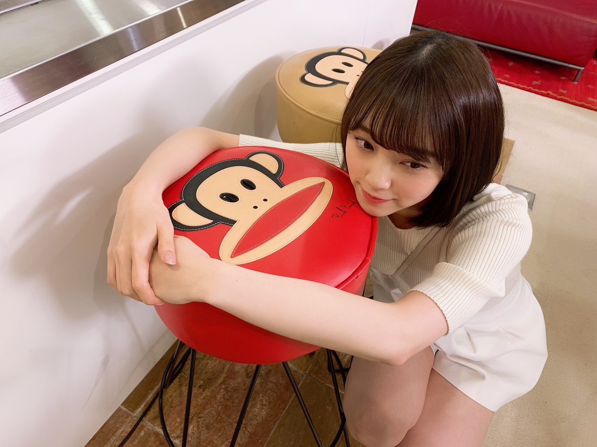
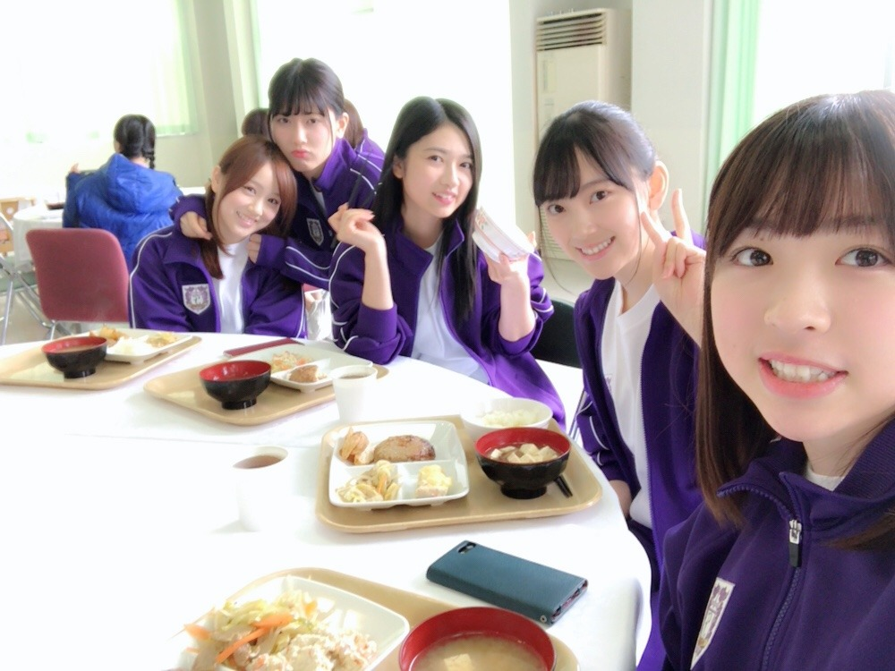

2019/0326Tue#ザンビ
先日の、坂道テレビ
見てくださりありがとうございました✨


小林由依ちゃんと齊藤京子ちゃんとお話ししてお鍋作ってまったりと貴重な時間でした！
昔から、自分からはなかなか話しかけれない人見知りでして来てくれたら仲良くなれるというか来るもの拒まずタイプなので、3人の中だと最年長だししっかりしなきゃ！話さなきゃ！とすーごい緊張してました。笑
手汗具合とか伝わってないといいな...笑
でも楽しかったのでまたおふたりと会ったらいろんなお話ししたいです☺︎
そして日テレドラマ ザンビが
明日、水曜24:59〜最終回になります！
早い...！！寂しい...

みり愛のザンビ迫力があって怖かったなぁ〜

フリージア学園の生徒、仲良しです！
いつもわいわいみんなで楽しかった！
撮影したのは一年前、
既に懐かしく感じます
是非最後までザンビを楽しんでいただけたら嬉しいです✨
本格的に連続ドラマに出させていただくのはザンビが初めてでしたがスタッフさんキャストの皆さんに支えられて日々学び、進み、充実した数ヶ月間でした☺︎
実乃梨という役に出会い、実乃梨の強さや優しさを日々感じながら演じることができて私も自分自身と向き合いながら振り返りながら過ごせました！
お芝居が好きだしもっともっとしたいと思えたし、いつの日か色んなドラマに出られるように少しずつ頑張りたいです✨
ザンビの感想お待ちしてますね〜
明日やで〜

#すっぴんフードマスク
ではははは！
2019/03/26 19:12


コメント(395)
足細くて、未央奈ちゃんめっちゃ可愛かった!!
坂道テレビ見ました！すごくよかった。未央奈がすごく大人びてみえた〜
ザンビ絶対見ます！未央奈の演技、引き込まれるから好きです。ホットギミックも観に行きますね。
今日も幸せでありますように
ザンビ絶対見るよー！
坂道テレビも見たよ!
ほんとに最高だった!
未央奈のすっぴん可愛すぎ!
頑張って行きましょう！
みおなを初め、二期メン箱推しなので、これからどんどん二期メンの良さをアピールして、選抜に二期メンがたくさん入ってきてくれることを心から応援しております‼️
個人的には、飛鳥と美央奈のWセンターの楽曲たくさん欲しい‼️二期メンファイト‼️
ザンビ最後どーなるか楽しみだぁ
未央奈の演技を見てよりホットギミックを見たくなったし、ホットギミックでの未央奈の演技が見たくなった！
アニメ「ブギーポップは眠れない」観ておりまふσ(´∀`●)ｱﾀｼ ♡
坂道テレビは録画してあるから後で観ます！
今日もよい一日を！
ザンビお疲れ様です！ ザンビのみおな、めっちゃカッコ良かったです
今後も色々な場面で活躍していってもらいたいです
今の私がいるのは、みおなのお陰です。受験勉強で心が折れかけた時もみおなのブログ読んだり、みおなの笑顔を見る事でなんとか、折れずに一年間頑張る事が出来ました
私はまだ握手会に行った事がありません。でも、受験がひと段落ついたということで、今度友達と一緒に握手会にいきます！
今からとーっても楽しみです！
これからもずっと応援していきます！
坂道TVめっちゃよかったよ！
みおちゃんが一番輝いてた！
可愛い！！！！！！
花粉症なんですかぁ？超あやしい(笑)
メンバーの卒業が止まらない。悲しいことです。でも、新たな道を見つけて邁進されることを思えば背中を押してあげるべきなんですよね。うん。でも、未央奈はまだ、ダメだからね(笑)
ザンビ観てます。怖いっす。もちろん最終回も予約済みです。最後どうなるんだろう。楽しみ。そうだ。ザンビ化(ゾンビ？)したメンバーは普段どこに隠れてるんだろうね？いつも突然、現れるからびっくりしてますけど。
でも、最後、飛鳥の夢だった何て落ちだったら、面白いね(笑)
４枚目アルバム購入しました。Amazonで(笑)幕張て会えること楽しみににしてます。乃木坂での握手初めてなので、よく要領がわかりませんが行けばなんとかなるでしょう。チューナーがブルーレイ対応ではないので
K's電器で早速購入しなければ。アハハハハ。ちと長くなりました。握手、きっと緊張して思ったことしゃべれないだろうなぁ。でも、質問考えて行きます。では、叉、更新してね。バイ
坂道テレビ、僕は見たよ。録画して見ました。みおなちゃん、
欅坂４６の小林由依さんと日向坂４６の齊藤京子さんとトークしながら、鍋を作ってたね。とても楽しそうなのが伝わってきましたよ。みおなちゃん、めっちゃかわいかったよ。
ドラマザンビ最終回、僕の住む北海道は放送されないので、明日、動画サイトで絶対見るね。
みおなちゃん、体調に気をつけて仕事頑張ってね。
またコメントするね。
ザンビ見ましたー
映画楽しみにします
頑張ってください(^-^)
可愛いですね♪
応援してます！
むっちゃ感動しました！
続編、または映画化に期待しています！
未央奈ちゃん大好きです！❤
良いことならいいんですが…☆
大好き！
チャァオ～～!☆彡
ロマンチックなぁみおちゃん、こんにちは～～～⤴️⤴️❕❤️❤️❤️❤️❤️笑顔
お猿さんの椅子にいる写メ～～～⤴️⤴️⤴️
なんかぁ～～～⤴️⤴️
日常の綺麗なぁみおちゃんが見れてぇ～～⤴️⤴️・・・
素敵です❕❤️❤️❤️❤️❤️笑顔
☆大人しい、おすまし！より☆彡
坂道テレビお疲れ様でした
NHK坂道テレビ観たよぉーーー
坂道の勢いはまだまだ、、、、続く(^∇^)！
ザンビ今夜最終回(;´д｀)明日は休みだからリアルタイムで観ます(-.-)Zzz・・・・絶対寝ない
未央奈、今日も一日お疲れさまでした。
坂道テレビ観ましたよ〜
料理作りながら話しをするって、意外と難しいですよね。。ちゃんと会話をまわしていたので安心しました。それに、料理もしっかりできるし、日頃の成果が出たんじゃないかな？
自分が、みんなが作ったものを食べるのは嬉しいし楽しいですよね。またいつの日か集まれるといいですね。
ザンビは最終回ですね。あっという間でした。
最終回を前にして、意外な展開を迎えて。
最後どうなるか楽しみです！
今回は短めに。。
体調管理には気をつけて。花粉症との付き合いも大変だけど、乗り越えていきましょう…。
ではでは、ねこでした。
他のドラマでも堀さんが主演なら絶対に見るのでこれからが楽しみですしホットギミック本当に楽しみです^ ^
今まで卒業してきたメンバーも、今いるメンバー合わせて全員で２期生！！
かわいいです
ダイスキー！！
坂道テレビ見たよー！未央奈の料理うまそー
ザンビも毎週見てます！もうあっという間に最終回だね、最後どうなるか楽しみもあるけどみおなも含めてみんな演技上手くて可愛すぎる
また新しいドラマも見たいなー
坂道テレビ観たよー(*´꒳`*)
人見知りが多少出ながらもめっちゃ頑張って話を振ってるのが伝わって来ました笑
平手ちゃんとのエピソードも初めて知りました(´⊙ω⊙`)
とても面白かったです（╹◡╹）♡
いよいよザンビ最終回ですねー
写真もありがと〜
今回のドラマでも色々学べたならなによりです♪(๑ᴖ◡ᴖ๑)♪
レコメンも頑張ってねー
毎回見て録画までしてるんだぁー✨
早いなぁ～堀ちゃんのドラマのなかでも
優しさがあふれてたし、女優もやってもOKだよ
乃木坂４６は、辞めないでね（絶対に）
堀ちゃんが卒業してしまったら、テレビやラジオも見たり、聴いたりしなくなるよ
いままでの堀ちゃんのテレビに出てる番組は
全部取ってあるんだからね✨
お互いに仕事がんばっぺ✨
またね(^_^)ﾉ
私も人見知りだから気持ちは凄いわかる！笑
緊張から未央奈との握手会も早口になってしまいがち。。。
ザンビは毎週楽しみに見させていただいてます！
未央奈の演技好きだから、いつも見入ってしまいます。
最終回も楽しみにしてますね！
すっぴんマスクもめちゃめちゃ可愛いです！
お身体には十分に気をつけて頑張ってくださいね！
これからも応援し続けます！
ずっと気になってました。
未央奈さん仕様。
いい演出でした。
坂道テレビ見たよ。
とても面白くて可愛かった！
すっぴんでも可愛いすぎ!!!
２期生六周年おめでとうございます！
魅力いっぱいなみんながこれからもいっぱい輝いていってほしいなって思います。
２期生の中でもザンビの中でも力強くみんなを引っ張っていく未央奈ちゃんはすごく素敵だよ！
コメントする